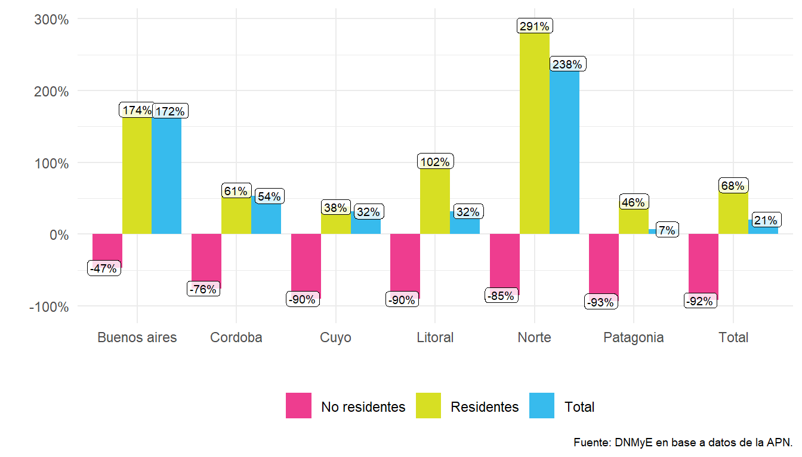
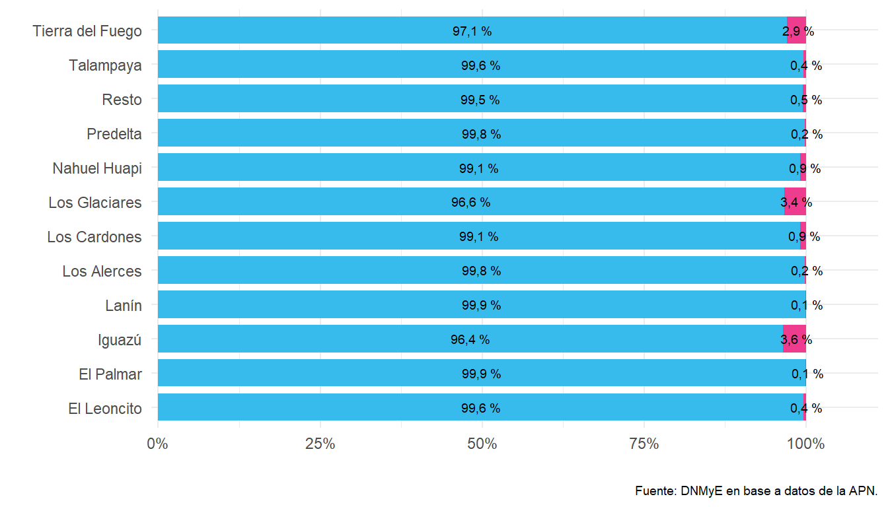

Capítulo 5 Parques Nacionales en Argentina
5.1 Introducción
Este capítulo presenta la evolución anual de las visitas de turistas a los Parques Nacionales en el país. A partir de información del Registro Nacional de Autorizaciones, Recaudaciones e Infracciones (RENARI) y de las Intendencias de las distintas áreas protegidas, la Administración de Parques Nacionales recopila y procesa los datos de los visitantes. Dicha información permite la clasificación de las visitas de los turistas en residentes en el país y no residentes en 36 Parques Nacionales en Argentina11.
5.2 Visitas a los Parques Nacionales
En el año 2021 se registraron 2,02 millones de visitas a los Parques Nacionales,con un incremento del 20,5% respecto del 2020.
Figura 5.1: Visitas a las áreas protegidas nacionales por condición de residencia. Serie histórica, en miles. Años 2008-2021.

Los turistas residentes presentaron un crecimiento del 68,4%, mientras que los turistas no residentes disminuyeron un 92,1%.
| Año | Visitas | |||||
|---|---|---|---|---|---|---|
| Total | Var % i.a. | Residentes | Var % i.a. | No residentes | Var % i.a. | |
| 2008 | 2.895.366 | /// | 1.715.714 | /// | 1.179.652 | /// |
| 2009 | 2.719.642 | −6,1% | 1.830.514 | 6,7% | 889.128 | −24,6% |
| 2010 | 3.133.363 | 15,2% | 2.158.168 | 17,9% | 975.195 | 9,7% |
| 2011 | 3.175.047 | 1,3% | 2.148.114 | −0,5% | 1.026.933 | 5,3% |
| 2012 | 3.290.404 | 3,6% | 2.325.958 | 8,3% | 964.446 | −6,1% |
| 2013 | 3.487.813 | 6,0% | 2.507.819 | 7,8% | 979.994 | 1,6% |
| 2014 | 3.891.995 | 11,6% | 2.709.385 | 8,0% | 1.182.610 | 20,7% |
| 2015 | 3.722.415 | −4,4% | 2.668.979 | −1,5% | 1.053.436 | −10,9% |
| 2016 | 3.526.698 | −5,3% | 2.490.203 | −6,7% | 1.036.495 | −1,6% |
| 2017 | 3.821.623 | 8,4% | 2.743.589 | 10,2% | 1.078.034 | 4,0% |
| 2018 | 4.027.351 | 5,4% | 2.820.968 | 2,8% | 1.206.383 | 11,9% |
| 2019 | 4.298.904 | 6,7% | 2.838.807 | 0,6% | 1.460.097 | 21,0% |
| 20201 | 1.676.078 | −61,0% | 1.175.966 | −58,6% | 500.112 | −65,7% |
| 20212 | 2.019.891 | 20,5% | 1.980.354 | 68,4% | 39.537 | −92,1% |
| Fuente: DNMyE en base a datos de la APN. | ||||||
| 1 A partir del 16 de marzo los parques nacionales se cerraron a la visita debido al cese de actividades por causa de la crisis sanitaria del covid -19 (Resolución Nro 57 APN). | ||||||
| 2 Entre el 22 y 30 de mayo los parques nacionales se cerraron a la visita en adhesión a las medidas nacionales (Decreto 334/2021); la reapertura a la visita se realizó progresivamente en los meses siguientes, de acuerdo a la evolución de la situación sanitaria de cada provincia. | ||||||
Al comparar los resultados del 2021 con el 2019 (prepandemia), las visitas tuvieron una caída del 53,0%, de las cuales, las visitas de los no residentes cayeron un 97,3%, producto de las restricciones a la movilidad en el mundo por la crisis sanitaria del Covid-19.
En 2021 los parques de la región Patagonia (12 áreas protegidas) concentraron el 59% del total de las visitas del país (7 p.p. menos que en el 2.020 y 9 p.p. más si se lo compara con el 2.019), mientras que los parques de la región Litoral (10 áreas protegidas) totalizaron un 33% (2 p.p. más que en el 2.020 y 10 p.p. menos respecto del 2.019). Por otro lado, al observar la distribución según condición de residencia, en el 2021 las visitas de los residentes tuvieron una participación en torno del 98% en las regiones Patagonia y Litoral respectivamente, mientras que en el 2.019 rondó en un 65% en cada una.
| Parque Nacional | 20211 | Var i.a. % | 20201 | 2019 | ||||||||
|---|---|---|---|---|---|---|---|---|---|---|---|---|
| Total | Residentes | No residentes | Total | Residentes | No residentes | Total | Residentes | No residentes | Total | Residentes | No residentes | |
| Total | ||||||||||||
| Total país | 2.019.891 | 1.980.354 | 39.537 | 20,5% | 68,4% | −92,1% | 1.676.078 | 1.175.966 | 500.112 | 4.298.904 | 2.838.807 | 1.460.097 |
| Patagonia2 | ||||||||||||
| Total región | 1.175.284 | 1.155.206 | 20.078 | 6,8% | 45,7% | −93,5% | 1.100.367 | 792.984 | 307.383 | 2.161.468 | 1.407.419 | 754.049 |
| Nahuel Huapi | 431.561 | 427.801 | 3.760 | 114,7% | 138,9% | −82,9% | 201.015 | 179.046 | 21.969 | 488.165 | 407.504 | 80.661 |
| Los Glaciares | 296.507 | 286.473 | 10.034 | 1,9% | 156,7% | −94,4% | 291.102 | 111.607 | 179.495 | 771.521 | 307.407 | 464.114 |
| Tierra del Fuego | 200.176 | 194.331 | 5.845 | −2,6% | 71,3% | −93,7% | 205.554 | 113.425 | 92.129 | 421.700 | 231.628 | 190.072 |
| Lanín | 174.896 | 174.649 | 247 | 98,1% | 109,1% | −94,8% | 88.279 | 83.516 | 4.763 | 126.220 | 120.113 | 6.107 |
| Los Alerces | 56.538 | 56.424 | 114 | −59,2% | −57,8% | −97,5% | 138.435 | 133.830 | 4.605 | 124.605 | 118.959 | 5.646 |
| Patagonia | 5.131 | 5.109 | 22 | /// | /// | /// | /// | /// | /// | /// | /// | /// |
| Laguna Blanca | 3.231 | 3.231 | /// | 278,3% | 303,4% | −100,0% | 854 | 801 | 53 | 2.658 | 2.507 | 151 |
| Lihué Calel | 2.800 | 2.779 | 21 | 159,0% | 169,0% | −56,2% | 1.081 | 1.033 | 48 | 6.158 | 5.933 | 225 |
| Monte León | 2.075 | 2.075 | /// | −59,7% | −52,2% | −100,0% | 5.149 | 4.341 | 808 | 3.615 | 2.778 | 837 |
| Bosques Petrificados | 1.686 | 1.679 | 7 | −18,7% | 0,5% | −98,3% | 2.074 | 1.671 | 403 | 3.636 | 2.770 | 866 |
| Perito Moreno | 683 | 655 | 28 | −30,5% | 2,3% | −91,8% | 983 | 640 | 343 | 1.029 | 606 | 423 |
| Lago Puelo | /// | /// | /// | −100,0% | −100,0% | −100,0% | 165.841 | 163.074 | 2.767 | 212.161 | 207.214 | 4.947 |
| Litoral3 | ||||||||||||
| Total región | 676.974 | 658.489 | 18.485 | 32,1% | 102,1% | −90,1% | 512.293 | 325.840 | 186.453 | 1.859.676 | 1.173.979 | 685.697 |
| Iguazú | 510.978 | 492.785 | 18.193 | 16,8% | 95,2% | −90,2% | 437.540 | 252.421 | 185.119 | 1.635.238 | 953.699 | 681.539 |
| El Palmar | 103.460 | 103.378 | 82 | 158,9% | 160,6% | −71,0% | 39.957 | 39.674 | 283 | 107.917 | 106.723 | 1.194 |
| Predelta | 27.746 | 27.687 | 59 | 48,9% | 49,3% | −29,8% | 18.633 | 18.549 | 84 | 73.400 | 72.984 | 416 |
| Iberá | 15.586 | 15.460 | 126 | 139,1% | 171,3% | −84,6% | 6.518 | 5.699 | 819 | 13.954 | 12.125 | 1.829 |
| Chaco | 9.146 | 9.132 | 14 | 362,6% | 367,8% | −44,0% | 1.977 | 1.952 | 25 | 8.462 | 8.317 | 145 |
| Río Pilcomayo | 5.394 | 5.394 | /// | 9,3% | 11,3% | −100,0% | 4.935 | 4.847 | 88 | 11.061 | 10.668 | 393 |
| Mburucuyá | 3.735 | 3.726 | 9 | 48,2% | 49,5% | −67,9% | 2.520 | 2.492 | 28 | 7.029 | 6.882 | 147 |
| El Impenetrable | 929 | 927 | 2 | 801,9% | 845,9% | −60,0% | 103 | 98 | 5 | 529 | 523 | 6 |
| Colonia Benítez | /// | /// | /// | −100,0% | −100,0% | /// | 93 | 93 | /// | 2.002 | 1.987 | 15 |
| Formosa | /// | /// | /// | −100,0% | −100,0% | −100,0% | 17 | 15 | 2 | 84 | 71 | 13 |
| Norte4 | ||||||||||||
| Total región | 123.369 | 122.587 | 782 | 237,8% | 290,6% | −84,8% | 36.520 | 31.382 | 5.138 | 198.912 | 183.112 | 15.800 |
| Talampaya | 58.388 | 58.174 | 214 | 452,4% | 525,6% | −83,2% | 10.570 | 9.299 | 1.271 | 76.526 | 70.774 | 5.752 |
| Los Cardones | 50.111 | 49.645 | 466 | 167,8% | 218,5% | −85,1% | 18.713 | 15.588 | 3.125 | 92.970 | 85.166 | 7.804 |
| Calilegua | 9.916 | 9.863 | 53 | 79,3% | 93,5% | −87,8% | 5.529 | 5.096 | 433 | 22.337 | 20.833 | 1.504 |
| Aconquija | 2.346 | 2.339 | 7 | 604,5% | 602,4% | /// | 333 | 333 | /// | 3.237 | 3.202 | 35 |
| Laguna de los Pozuelos | 1.472 | 1.434 | 38 | 79,7% | 108,7% | −71,2% | 819 | 687 | 132 | 1.826 | 1.336 | 490 |
| El Rey | 609 | 605 | 4 | 2.242,3% | 2.226,9% | /// | 26 | 26 | /// | 776 | 734 | 42 |
| Nogalar de los Toldos | 498 | 498 | /// | −5,0% | 43,1% | −100,0% | 524 | 348 | 176 | 1.086 | 965 | 121 |
| Baritú | 29 | 29 | /// | 383,3% | 480,0% | −100,0% | 6 | 5 | 1 | 154 | 102 | 52 |
| Copo | /// | /// | /// | /// | /// | /// | /// | /// | /// | /// | /// | /// |
| Cuyo5 | ||||||||||||
| Total región | 18.369 | 18.302 | 67 | 32,0% | 38,1% | −89,9% | 13.916 | 13.253 | 663 | 46.851 | 44.449 | 2.402 |
| El Leoncito | 16.077 | 16.016 | 61 | 97,7% | 107,8% | −85,6% | 8.134 | 7.709 | 425 | 23.443 | 21.895 | 1.548 |
| Sierra de las Quijadas | 2.211 | 2.205 | 6 | −61,7% | −60,1% | −97,5% | 5.769 | 5.531 | 238 | 23.362 | 22.510 | 852 |
| San Guillermo | 81 | 81 | /// | 523,1% | 523,1% | /// | 13 | 13 | /// | 46 | 44 | 2 |
| Buenos aires | ||||||||||||
| Total región | 13.681 | 13.664 | 17 | 172,3% | 173,7% | −46,9% | 5.025 | 4.993 | 32 | 6.515 | 6.479 | 36 |
| Ciervo de los Pantanos | 13.681 | 13.664 | 17 | 172,3% | 173,7% | −46,9% | 5.025 | 4.993 | 32 | 6.515 | 6.479 | 36 |
| Cordoba6 | ||||||||||||
| Total región | 12.214 | 12.106 | 108 | 53,5% | 61,1% | −75,6% | 7.957 | 7.514 | 443 | 25.482 | 23.369 | 2.113 |
| Quebrada del Condorito | 12.214 | 12.106 | 108 | 53,5% | 61,1% | −75,6% | 7.957 | 7.514 | 443 | 25.482 | 23.369 | 2.113 |
| Fuente: DNMyE en base a datos de la APN. | ||||||||||||
| 1 Datos provisorios | ||||||||||||
| 2 No se recibió información de visitas de los parques Lago Puelo, Los Glaciares (portada Lago Viedma), Tierra del Fuego (RN3 en junio y julio), Monte León (enero y febrero). | ||||||||||||
| 3 Los parques Formosa y Colonia Benitez se mantuvieron cerrados hasta septiembre por la emergencia sanitaria del covid-19; los parques Mburucuyá y Predelta se mantuvieron cerrados de mayo a mediados de julio; el parque Río Pilcomayo se mantuvo cerrado a la visita en enero y febrero, y desde mediados de mayo a fines de junio por la emergencia sanitaria del covid-19. | ||||||||||||
| 4 El PN Copo se reabrió a la visita a mediados de octubre; el parque Baritú se mantuvo cerrado a la visita desde principios del 2021 hasta septiembre por la emergencia sanitaria del covid-19 | ||||||||||||
| 5 Los parques Sierra de las Quijadas y San Guillermo se mantuvieron cerrados a la visita hasta enero y mayo respectivamente por la emergencia sanitaria del covid-19; no se recibió información de visitas del parque El Leoncito (noviembre). | ||||||||||||
| 6 No se recibió información de visitas en el mes de junio. | ||||||||||||
Al considerar las visitas según condición de residencia, se observa que el incremento del 68,4% en las visitas de los residentes se explica principalmente por un crecimiento de las visitas de los parques de las regiones Patagonia, Litoral y Norte (45,7%, 102,1% y 290,6%) respectivamente.
Figura 5.2: Visitas a los parques nacionales por región de destino según condición de residencia, variación interanual. Años 2021-2020.
Al analizar la estacionalidad, se observa que en el cuarto trimestre del 2021 se concentró el 40,2% de las visitas anuales, debido a la gradual flexibilización de las medidas sanitarias por el covid-19 que fueron aplicando las provincias especialmente a partir del segundo semestre del año.
Figura 5.3: Visitas a los parques nacionales por trimestre. Año 2021.

En el tercer y cuarto trimestre se registraron en el país los mayores incrementos en las visitas respecto del mismo período del año anterior (2.231,9% y 880,4% respectivamente).
En el primer trimestre 2021 se registró una caída de 62,1% debido a que las restricciones a la movilidad comenzaron durante la segunda mitad de marzo del 2020. El segundo trimestre fue el que menos visitas concentró (7,9%) debido a que en el 2021 volvieron a aplicarse restricciones a los viajes en el país a partir de la segunda quincena de mayo.
Las regiones Buenos Aires, Córdoba y Cuyo concentraron la mayor cantidad de visitas durante el tercer trimestre del año (en torno al 30%), mientras que en las regiones Litoral, Patagonia y Norte la mayor cantidad de visitas se registraron durante el cuarto trimestre (rondando el 40%).
| Trimestre | 2021 | Var i.a. % | Participación % | 2020 | 2019 | ||||||||||
|---|---|---|---|---|---|---|---|---|---|---|---|---|---|---|---|
| Total | Residentes | No residentes | Total | Residentes | No residentes | Total | Residentes | No residentes | Total | Residentes | No residentes | Total | Residentes | No residentes | |
| País | |||||||||||||||
| Total | 2.019.891 | 1.980.354 | 39.537 | 20,5% | 68,4% | −92,1% | 100,0% | 100,0% | 100,0% | 1.676.078 | 1.175.966 | 500.112 | 4.298.904 | 2.838.807 | 1.460.097 |
| I Trim | 596.478 | 595.407 | 1.071 | −62,1% | −44,6% | −99,8% | 29,5% | 30,1% | 2,7% | 1.573.679 | 1.073.887 | 499.792 | 1.499.763 | 967.596 | 532.167 |
| II Trim | 155.276 | 154.600 | 676 | /// | /// | /// | 7,7% | 7,8% | 1,7% | /// | /// | /// | 670.922 | 466.008 | 204.914 |
| III Trim | 455.883 | 454.946 | 937 | 2.231,9% | 2.227,1% | /// | 22,6% | 23,0% | 2,4% | 19.550 | 19.550 | /// | 928.547 | 697.390 | 231.157 |
| IV Trim | 812.254 | 775.401 | 36.853 | 880,4% | 839,5% | 11.416,6% | 40,2% | 39,2% | 93,2% | 82.849 | 82.529 | 320 | 1.199.672 | 707.813 | 491.859 |
| Buenos aires | |||||||||||||||
| Total | 13.681 | 13.664 | 17 | 172,3% | 173,7% | −46,9% | 100,0% | 100,0% | 100,0% | 5.025 | 4.993 | 32 | 6.515 | 6.479 | 36 |
| I Trim | 3.172 | 3.168 | 4 | −32,1% | −31,7% | −87,5% | 23,2% | 23,2% | 23,5% | 4.672 | 4.640 | 32 | /// | /// | /// |
| II Trim | 2.124 | 2.121 | 3 | /// | /// | /// | 15,5% | 15,5% | 17,6% | /// | /// | /// | /// | /// | /// |
| III Trim | 4.301 | 4.294 | 7 | /// | /// | /// | 31,4% | 31,4% | 41,2% | /// | /// | /// | 1.097 | 1.094 | 3 |
| IV Trim | 4.084 | 4.081 | 3 | 1.056,9% | 1.056,1% | /// | 29,9% | 29,9% | 17,6% | 353 | 353 | /// | 5.418 | 5.385 | 33 |
| Cordoba | |||||||||||||||
| Total | 12.214 | 12.106 | 108 | 53,5% | 61,1% | −75,6% | 100,0% | 100,0% | 100,0% | 7.957 | 7.514 | 443 | 25.482 | 23.369 | 2.113 |
| I Trim | 2.907 | 2.882 | 25 | −61,3% | −59,2% | −94,4% | 23,8% | 23,8% | 23,1% | 7.502 | 7.059 | 443 | 6.401 | 5.946 | 455 |
| II Trim | 2.255 | 2.230 | 25 | /// | /// | /// | 18,5% | 18,4% | 23,1% | /// | /// | /// | 6.397 | 5.940 | 457 |
| III Trim | 3.956 | 3.930 | 26 | /// | /// | /// | 32,4% | 32,5% | 24,1% | /// | /// | /// | 7.515 | 6.948 | 567 |
| IV Trim | 3.096 | 3.064 | 32 | 580,4% | 573,4% | /// | 25,3% | 25,3% | 29,6% | 455 | 455 | /// | 5.169 | 4.535 | 634 |
| Cuyo | |||||||||||||||
| Total | 18.369 | 18.302 | 67 | 32,0% | 38,1% | −89,9% | 100,0% | 100,0% | 100,0% | 13.916 | 13.253 | 663 | 46.851 | 44.449 | 2.402 |
| I Trim | 5.809 | 5.786 | 23 | −54,5% | −52,2% | −96,5% | 31,6% | 31,6% | 34,3% | 12.760 | 12.103 | 657 | 14.344 | 13.677 | 667 |
| II Trim | 2.656 | 2.654 | 2 | /// | /// | /// | 14,5% | 14,5% | 3,0% | /// | /// | /// | 8.518 | 7.981 | 537 |
| III Trim | 5.469 | 5.464 | 5 | /// | /// | /// | 29,8% | 29,9% | 7,5% | /// | /// | /// | 16.747 | 16.239 | 508 |
| IV Trim | 4.435 | 4.398 | 37 | 283,7% | 282,4% | 516,7% | 24,1% | 24,0% | 55,2% | 1.156 | 1.150 | 6 | 7.242 | 6.552 | 690 |
| Litoral | |||||||||||||||
| Total | 676.974 | 658.489 | 18.485 | 32,1% | 102,1% | −90,1% | 100,0% | 100,0% | 100,0% | 512.293 | 325.840 | 186.453 | 1.859.676 | 1.173.979 | 685.697 |
| I Trim | 122.234 | 121.921 | 313 | −75,3% | −60,5% | −99,8% | 18,1% | 18,5% | 1,7% | 495.376 | 308.933 | 186.443 | 503.994 | 299.561 | 204.433 |
| II Trim | 47.101 | 46.839 | 262 | /// | /// | /// | 7,0% | 7,1% | 1,4% | /// | /// | /// | 357.930 | 230.779 | 127.151 |
| III Trim | 197.365 | 196.957 | 408 | 3.220,4% | 3.213,5% | /// | 29,2% | 29,9% | 2,2% | 5.944 | 5.944 | /// | 532.427 | 381.460 | 150.967 |
| IV Trim | 310.274 | 292.772 | 17.502 | 2.727,4% | 2.570,3% | 174.920,0% | 45,8% | 44,5% | 94,7% | 10.974 | 10.964 | 10 | 465.325 | 262.179 | 203.146 |
| Norte | |||||||||||||||
| Total | 123.369 | 122.587 | 782 | 237,8% | 290,6% | −84,8% | 100,0% | 100,0% | 100,0% | 36.520 | 31.382 | 5.138 | 198.912 | 183.112 | 15.800 |
| I Trim | 15.765 | 15.665 | 100 | −55,5% | −48,3% | −98,1% | 12,8% | 12,8% | 12,8% | 35.419 | 30.281 | 5.138 | 36.867 | 31.487 | 5.380 |
| II Trim | 14.332 | 14.129 | 203 | /// | /// | /// | 11,6% | 11,5% | 26,0% | /// | /// | /// | 40.595 | 38.151 | 2.444 |
| III Trim | 40.168 | 39.931 | 237 | 6.561,4% | 6.522,1% | /// | 32,6% | 32,6% | 30,3% | 603 | 603 | /// | 75.889 | 71.862 | 4.027 |
| IV Trim | 53.104 | 52.862 | 242 | 10.563,5% | 10.514,9% | /// | 43,0% | 43,1% | 30,9% | 498 | 498 | /// | 45.561 | 41.612 | 3.949 |
| Patagonia | |||||||||||||||
| Total | 1.175.284 | 1.155.206 | 20.078 | 6,8% | 45,7% | −93,5% | 100,0% | 100,0% | 100,0% | 1.100.367 | 792.984 | 307.383 | 2.161.468 | 1.407.419 | 754.049 |
| I Trim | 446.591 | 445.985 | 606 | −56,1% | −37,3% | −99,8% | 38,0% | 38,6% | 3,0% | 1.017.951 | 710.872 | 307.079 | 938.157 | 616.925 | 321.232 |
| II Trim | 86.808 | 86.627 | 181 | /// | /// | /// | 7,4% | 7,5% | 0,9% | /// | /// | /// | 257.482 | 183.157 | 74.325 |
| III Trim | 204.624 | 204.370 | 254 | 1.473,7% | 1.471,7% | /// | 17,4% | 17,7% | 1,3% | 13.003 | 13.003 | /// | 294.872 | 219.787 | 75.085 |
| IV Trim | 437.261 | 418.224 | 19.037 | 529,9% | 505,2% | 6.162,2% | 37,2% | 36,2% | 94,8% | 69.413 | 69.109 | 304 | 670.957 | 387.550 | 283.407 |
| Fuente: DNMyE en base a datos de la APN. | |||||||||||||||
Al observar la participación de los 10 parques con mayor volumen de visitas en el 2021, el 70% se concentró en cuatro parques nacionales: el PN Iguazú fue el que concentró el mayor número de visitas 25,3% , siguiéndole en importancia tres parques de la región Patagonia: Los Glaciares, Nahuel Huapi y Tierra del Fuego, que reunieron en conjunto el 46% del total.
Figura 5.4: Visitas a áreas protegidas nacionales con mayor volumen de visitantes, distribución porcentual. Año 2021.

En el 2021 la mayor proporción de visitas que recibieron los Parques Nacionales fueron de turistas residentes, debido al proceso de recuperación gradual de los viajes a nivel mundial después de la pandemia. No obstante, en los PN Iguazú, Los Glaciares y Tierra del Fuego, la participación de turistas no residentes alcanzó a explicar aproximadamente el 10% de las visitas totales del 2021, por la gradual apertura de las fronteras del país pospandemia.
Figura 5.5: Visitas a las áreas protegidas nacionales, según condición de residencia. Año 2021.
5.3 Recursos disponibles
Los datos que se muestran en este capítulo forman parte del Sistema de Información Turística de la Argentina (SINTA) https://www.yvera.tur.ar/sinta/ de la Dirección Nacional de Mercados y Estadística (DNMyE). Los mismos se presentan a través de distintos formatos:
Informes: Publicación mensual con información de visitas de residentes y no residentes a Parques Nacionales de Argentina.
Reportes:Reporte de los últimos datos de visitas a Parques Nacionales.
Datos Abiertos: El portal de Datos Abiertos incluye un dataset con recursos de visitas a Parques Nacionales según residencia y región de destino.
A partir del 2021 se incorporó información de visitas del Parque Nacional Patagonia, en la provincia de Santa Cruz.↩︎